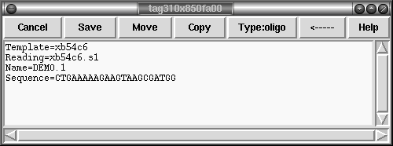
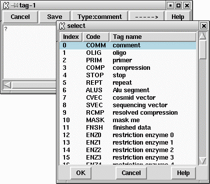
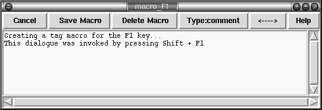

Annotations (or tags) can be placed at any position on readings or on the consensus. They are usually used to record positions of primers for walking, or to mark sites, such as repeats or compressions, that have caused problems during sequencing. Each annotation has a type such as "primer", a position, a length, a strand (forward, reverse or both) and an optional comment. Each type and strand has an associated colour that will be shown on the display. For information on searching for annotations see section Search by Tag Type, and section Search by Annotation Comments.

FIXME: not all of the tag editor features are supported yet; specifically the Move/Copy functionality is currently missing.
To create an annotation, make a selection and then select "Create Tag" from the contig editor commands menu at the top of the editor or by pressing the right mouse button. @xref{Editor-Commands,Editor-Commands,The Commands Menu}. This will bring up a further window; the "tag editor" (shown above). The "Type:" button at the top of the editor invokes a selectable list from which tag types can be chosen. See below.

Use this to select the desired type of annotation.
Next the strand of the annotation can be selected. This will be displayed as one of "<---->", "<----", "---->" and "?----?" indicating both strands, top strand only, bottom strand only, and stranded but unknown strand respectively. These mirror the GFF strand definitions. The comment (the box beneath the buttons) can be edited using the usual combination of keyboard input and arrow keys. The "Save" button will exit the tag editor and create the annotation. To abandon editing without creating the annotation use the "Cancel" button.
To edit an existing annotation, position the editing cursor within a annotation and select "Edit Tag" from the commands menu. This will be a cascading menu, typically showing one tag. If multiple tags coincide at the same sequence position you will be able to chose which tag to edit. Once again the tag editor will be invoked and operates as before. The F11 key is also a shortcut for editing the top-most tag underneath the editor cursor. When editing, the "Save" will save the edited changes and "Cancel" will abandon changes.
Removing a annotation involves positioning the editing cursor within an annotation and selecting "Delete Tag" from the commands menu. As with "Edit Tag" this is a cascading menu to allow you to chose which tag at a specific point to delete. The F12 key is a shortcut to remove the top-most tag underneath the editor cursor.
As usual, "undo" can be used to undo any of these annotation creations, edits and removals.
Some tags may contain graphical controls instead of the usual text panel. These are encoded with the master gap4/5 tag database (GTAGDB) by specifying the default tag text to be a piece of "ACD" code. A full description of the (modified for gap4/5) ACD syntax is not available currently, but it is strongly modelled on the the EMBOSS ACD syntax which has documentation at http://www.emboss.org/Acd/index.html
It is possible to add your own tag types by modifying either the system GTAGDB file or creating your own GTAGDB file in your home directory (for all your databases) or the current directory (for just those in that directory).
For rapid editing and deleting the F11 and F12 keys may be used. These edit and delete the top-most tag underneath the editing cursor. If you wish to edit or delete the tag underneath the mouse cursor instead (and hence save a mouse click) use Shift F11 and Shift F12 for edit and delete.
The Control-Q key sequence may be used to toggle the displaying of tags. Pressing it once will prevent all tags from being displayed in the editor. This is sometimes useful to see any colouring information underneath the tag. Pressing Control-Q once more will redisplay them.

For rapid annotating a series of 10 macros may be programmed. Press Shift and a function key between F1 and F10 to bring up the macro editor. This look much like the normal tag editor except that Save is replaced with Save Macro and saving does not actually create a tag on the sequence. To use the macro, highlight the bases you wish and press the function key corresponding to that macro - F1 to F10. For a single base pair tag you do not need to underline a region as the tag will automatically cover the base underneath the editing cursor. To remember these permanently use the "Save Tag Macros" option in the "Settings" menu.
If you have an existing tag you wish to rapidly duplicate to many places, use Control plus a function key to copy the tag underneath the editing cursor to that numbered tag macro. This is simply a short cut for Shift and the function key, but without needing to manually replicate the tag type and textual comment.
You may find that some function keys are already programmed to do other things (such as raise or lower windows), depending on the windowing environment in use. If this is the case either modify the configuration of your windowing system or simply use another macro key.
Shift F1-F10 Create a tag macro via a dialogue window Control F1-F10 Create a tag macro from tag at editor cursor F1-F10 Apply a tag macro (create a real tag)